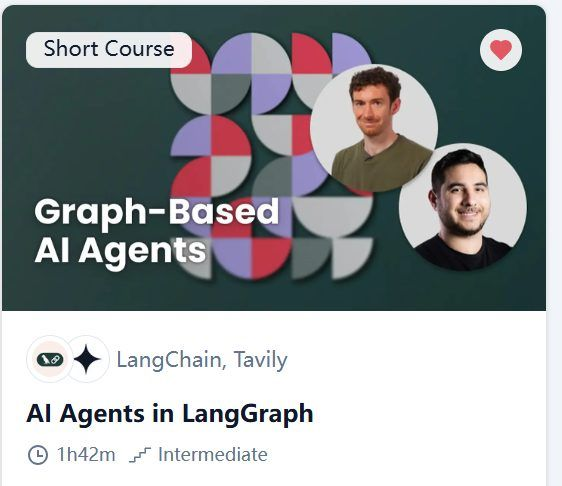
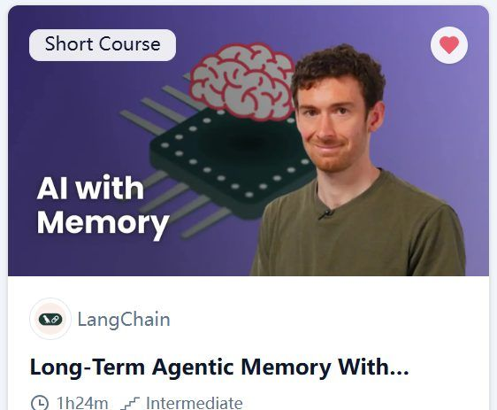
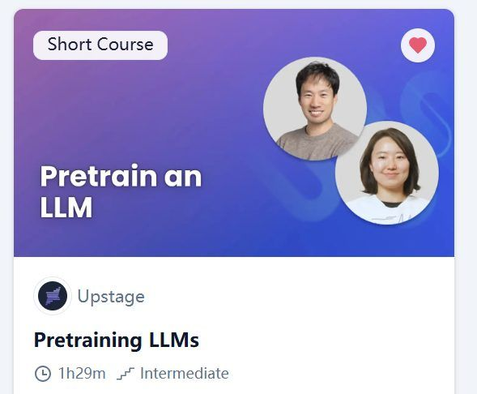
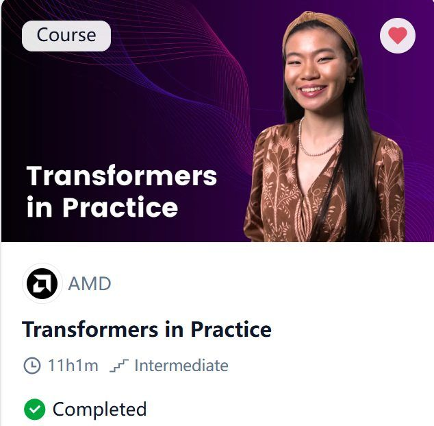
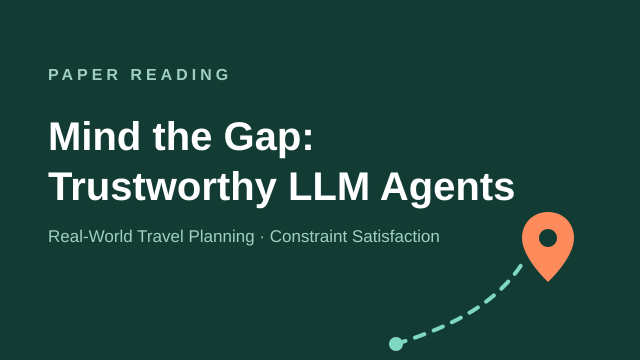
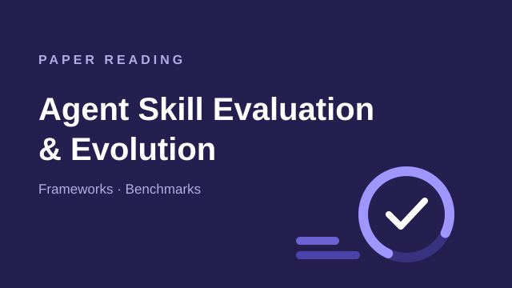
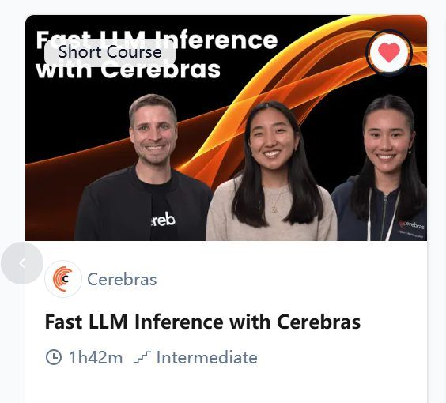
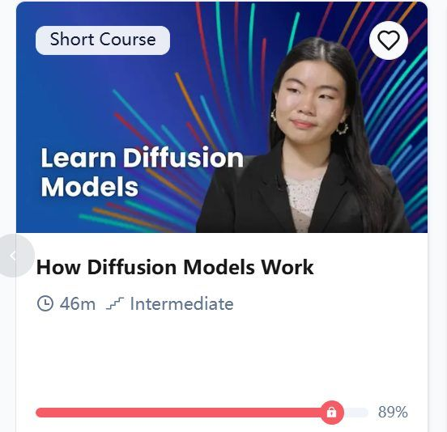

Learning Records
Current collection: DeepLearning.AI
These are my notes from DeepLearning.AI courses and paper reading. Each record keeps the original wording and screenshots from my DOCX notebook.
Download the original DOCX
Record 01
AI Agents in LangGraph

Record 02
Long-Term Agentic Memory with LangGraph
Record 03
Building toward Computer Use with Anthropic
Record 04
Evaluating AI Agents

Record 05
Pretraining LLMs
Record 06
Post-training of LLMs
Record 07
Reinforcement Fine-Tuning LLMs with GRPO

Record 08
Transformers in Practice
Record 09
Agent Skills with Anthropic

Record 10
Mind the Gap to Trustworthy LLM Agents: A Systematic Evaluation on Constraint Satisfaction for Real-World Travel Planning

Record 11
Agent Skill Evaluation and Evolution: Frameworks and Benchmarks
Record 12
Building Code Agents with Hugging Face smolagents

Record 13
Fast LLM Inference with Cerebras
Record 14
Fast & Efficient LLM Inference with vLLM

Record 15